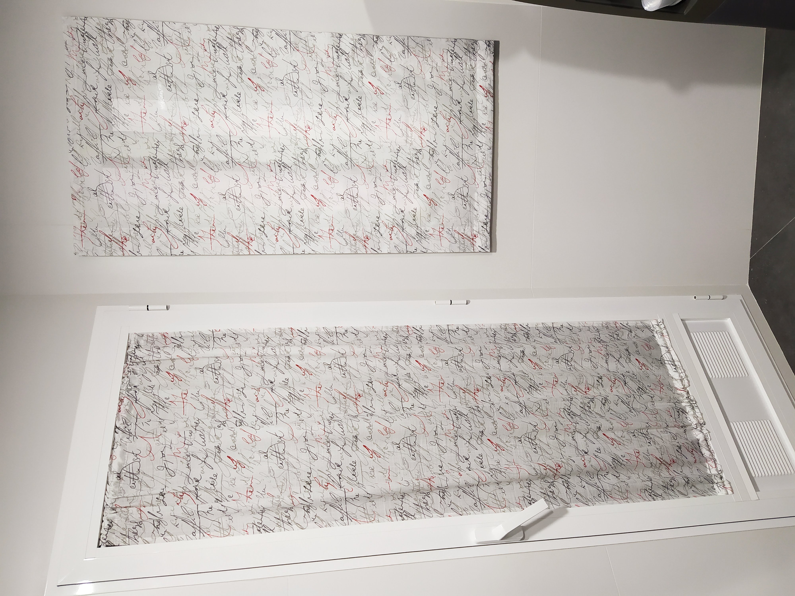
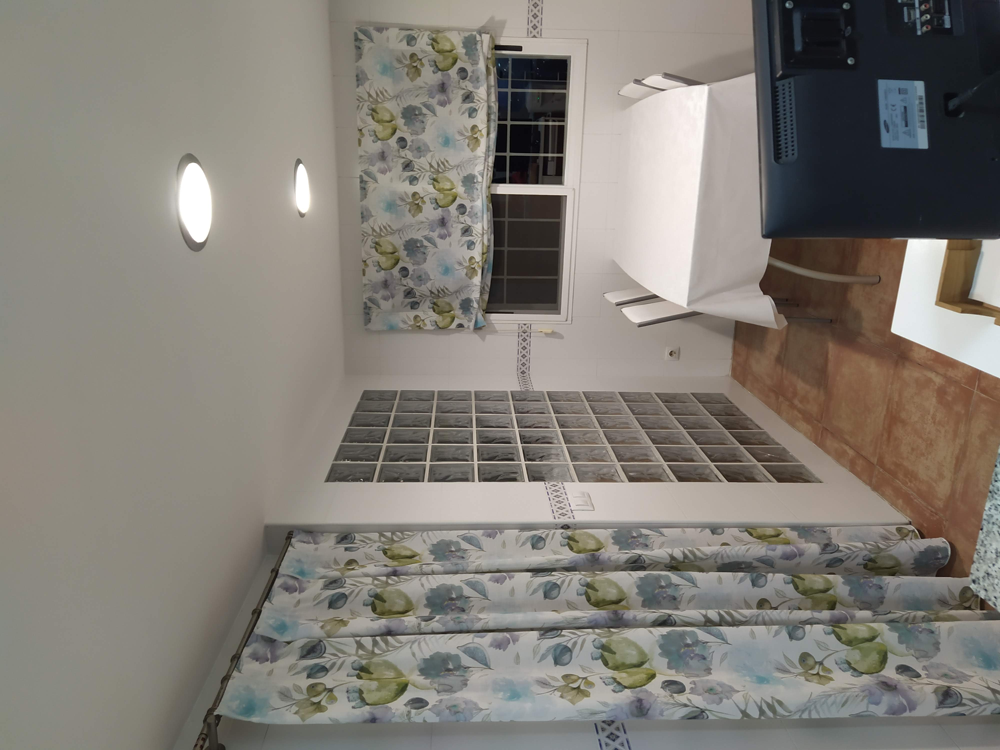
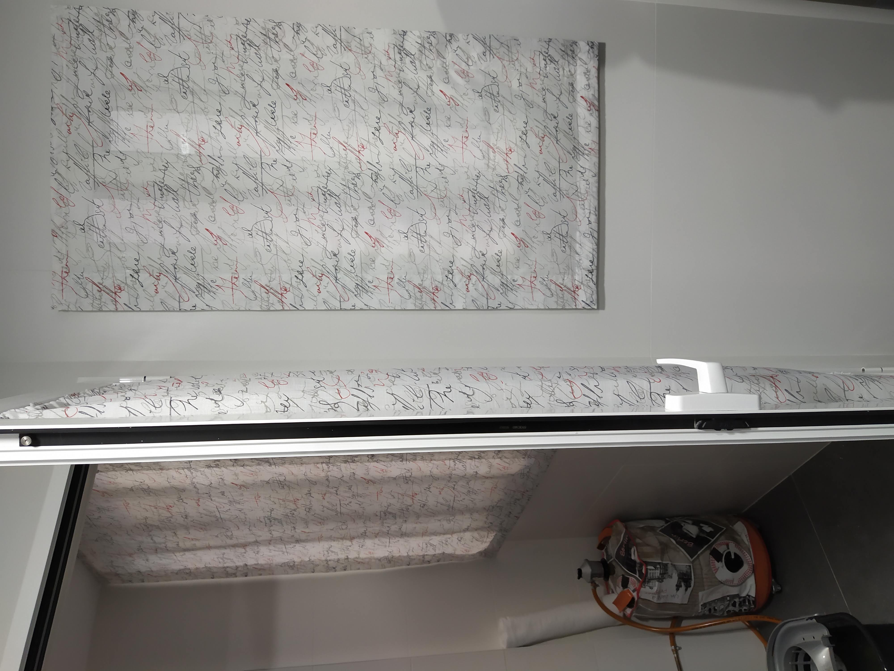

Cortinas tecnicas con impresion digital
Tejidos tecnicos con personalizacion grafica para hogar y negocio.
Que ofrecemos
Las cortinas tecnicas ofrecen control solar, resistencia y mantenimiento sencillo en espacios de uso intensivo. La impresion digital permite personalizar acabados con imagen corporativa o propuesta decorativa.
Son una solucion muy util para cocinas, despachos, proyectos contract y estancias donde se necesita precision funcional.
Proceso de trabajo
Analizamos orientacion solar, reflexion interior y nivel de privacidad para definir tejido tecnico, porcentaje de apertura y sistema de accionamiento mas adecuado.
Galeria de cortinas tecnicas



